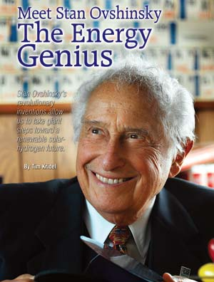
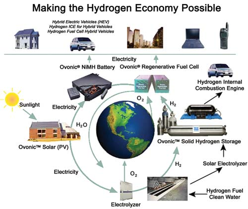
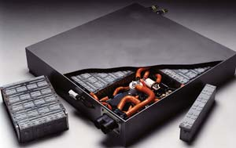

If you’ve used a rechargeable battery, driven a hybrid vehicle or put solar panels on your roof, you’re benefiting from the work of Stanford Ovshinsky. But unless you’re an energy aficionado or you work in the automotive industry, chances are you’ve never heard of him.
President George W. Bush probably hadn’t, either, until he toured Ovshinsky’s solar company, United Solar Ovonic (Uni-Solar), in February 2006. “This is real,” Bush said afterward, as if he’d had an epiphany about solar energy’s potential. If he did, he wouldn’t have been the first: People who’ve known Ovshinsky for decades say that he has a knack for convincing skeptics about the true potential of renewable energy.
Though Ovshinsky now holds well over 300 patents, his most notable inventions include thin-film photovoltaic (PV) solar panels and PV production machines, the nickel metal hydride (NiMH) battery, and solid hydrogen fuel storage to safely store hydrogen in vehicles - all of which work together in his renewable energy plan, the hydrogen loop.
The hydrogen loop is designed to convert our carbon-based economy into a hydrogen-based one, using renewable sources such as the sun - thereby reducing our dependency on fossil fuels and eliminating their global-warming causing emissions. In a shift to a hydrogen-based economy, Ovshinsky sees not only the end to conflict over the world’s dwindling oil supplies, but also economic growth from new industries with higher value jobs.
“Stan can be a great salesman, but he always says: ‘I’m not going to tell you about it, I’m just going to show you,’” says solar expert Steve Heckeroth, director of building integrated photovoltaic products for ECD (Energy Conversion Devices) Ovonics, the parent company of Uni-Solar.
To make his point, Ovshinsky carries with him a panel of thin-film PV, which can be used to power everything from homes and factories to space satellites. Thin-film PV is lighter, more flexible, more durable, more efficient in low light and less expensive than previous solar-electric panel technologies.
“He connects that panel to a radio,” Heckeroth says. “He can go out on a rainy day and put the panel in ambient light, and the radio will come on.” By comparison, other PV technologies produce less power, or none at all, if shade covers even a portion of the panels. Because of their varied atomic structure, ECD’s solar cells capture a wider range of frequencies from the light spectrum, thereby producing more energy than traditional crystalline silicon solar panels.
Ovshinsky followed an unconventional path to establish ECD Ovonics, one of the world’s leading energy innovators. Instead of going to college, he opened up a machine shop soon after high school. That may sound like an odd way to try to change the world, but it echoes Ovshinsky’s preference for the practical rather than the political.
“My wife [Iris] and I set up ECD in a storefront in Detroit in 1960 for the express purpose of using science and technology to solve serious societal problems,” Ovshinsky says. “I felt that without having truly realistic answers for unemployment, for lack of new industries, for things that were wrong with the world, you wouldn’t go very far. We are working to make the world a better place.”
Early on, the Ovshinskys realized fossil fuels were an area that would be a source of climate change and global conflict. “What do you do about it? You make fossil fuels irrelevant to world affairs,” he says. “The solution is the ultimate one: to utilize hydrogen.” Since then, hydrogen has been at the center of Ovshinsky’s work.
For starters, Ovshinsky sought to harness solar power (which comes from the hydrogen-burning sun) with thin-film PV. Hydrogen is the active element in anything that’s flammable, including coal and gasoline. For vehicles, Ovshinsky sought a way to use non-polluting hydrogen itself rather than hydrogen from fossil fuel intermediaries that simply trapped it. “So I invented a battery (NiMH) that works on the basis of hydrogen storage and hydrogen ions going back and forth between two electrodes,” he says. “All of the batteries in commercial hybrid cars are based on our patents.”
Furthermore, in August 2005, ECD unveiled a modified Toyota Prius with an internal combustion engine powered entirely by hydrogen. In addition to NiMH batteries, the modified Prius used Ovonic solid-state hydrogen storage cylinders, which supplied the fuel. “It gave the equivalent mileage of a gasoline hybrid, but with practically no pollution or climate changing gases at all,” he says.
A challenge to using flammable hydrogen as a fuel for vehicles is finding a way to contain it safely, especially in an accident. Rather than storing it as a high-pressure gas, Ovshinsky created a spongelike material - known as a solid hydride - that could absorb hydrogen gas, making it safe and easy to transport.
Ovshinsky also sees solid hydrogen storage as a means around two other hurdles to a hydrogen economy: mass production and distribution to fuel stations. “People say: ‘What about the infrastructure? That’s going to cost trillions of dollars.’ So we built a mobile solid hydride fuel station as well as our own dispenser,” he says. “It’s cheap. You can make it on a production line and ship it anywhere.” The station converts solar energy, or traditional electricity produced at night, to hydrogen through electrolysis, which releases hydrogen when electricity flows through water. Ovshinsky believes solid hydrogen can be transported via ordinary shipping means. And at retail hydrogen fuel stations, or even your home, he envisions thin-film PV solar panels creating hydrogen through electrolysis on-site, then storing that hydrogen in solid form.
Not long after his visit to Uni-Solar, President Bush urged Congress to put aside political differences and help fund renewable energy technologies. The big question is whether Bush’s epiphany will result in backing - both financial and political. “We want that,” Ovshinsky says with a sigh. “We need that, obviously. You’d expect that there would be skepticism, but this wasn’t legitimate skepticism that stopped us [in the past]. It was vested interests not wanting to change.” Our oil-based transportation system, for example, would be less relevant if the world moved to using hydrogen for fuel.
Even though Ovshinsky’s technologies would marginalize fossil fuels, the need for them wouldn’t be eliminated. “We’re not saying that oil is going to be irrelevant. It certainly has its place,” he says. “We’re not anti-anything. We want to solve problems with realistic solutions.”
So far, Ovshinsky has support from some unexpected places. For example, Texaco paid $67.3 million in May 2000 for a 20 percent stake in ECD Ovonics. (Texaco later merged with Chevron.) That investment allowed Texaco to work with ECD Ovonics on commercializing technologies such as its solid hydrogen storage and regenerative fuel cell. “They said: ‘Stan, we don’t want to change you. We want you to change us,’” Ovshinsky says.
Texaco’s conversion reflects Ovshinsky’s ability to sell renewable energy, even to those who’ve made their fortunes in oil. “He’s a visionary and a missionary,” says Frank Jamerson, a retired General Motors executive who’s known Ovshinsky for 30 years, and worked with him on electric vehicles in the 1990s. “He’s been inventing products that do exactly what I was hoping to do: eliminate fossil fuels, both with batteries and photovoltaics.”
Time will tell whether Bush’s visit and subsequent challenge to Congress turn out to be just more talk or the beginning of a genuine political push for renewable energy.
“Politics come and go, but progress has to go on, even under circumstances that aren’t ideal,” Ovshinsky says. “I’m out to change the world, and to do that, you have to work with people.” Ovshinsky says he’s proud of the culture he and Iris have established at ECD and grateful for the enormously talented people who work with them - especially ECD CEO Bob Stempel.
To create jobs, address climate change, take oil out of the war equation and deal with rising energy demands, Ovshinsky sees a need for government-backed initiatives on the scale of past energy efforts such as the Manhattan Project, the Tennessee Valley Authority and the Rural Electric Administration.
“In 1934, almost 90 percent of the rural population was without electricity,” Ovshinsky says. “When the [government] built the big dams and hydroelectric plants in the South and Northwest, they turned areas that were without hope into the most exciting areas around. It was a wonderful thing that came out of necessity.”
Ovshinsky’s uncanny knack for thinking ahead makes him a true visionary. “Sometimes I think that he’s taken a trip to the future and is trying to get us where we need to go,” Heckeroth says. “I once asked him whether hydrogen or batteries were going to be the ultimate winner in transportation. He said, ‘Both, of course.’”
In some cases, Ovshinsky’s visions have become reality and vindicated him in the process. For example, he developed the technology for NiMH batteries, but when American companies dismissed it, Ovshinsky courted their Japanese competitors, which quickly embraced NiMH and began mass-producing it. Last year, about 1 billion NiMH batteries were sold in applications big and small, from portable electronic devices to hybrid cars.
It remains to be seen whether history will repeat itself, this time with all-electric vehicles and hydrogen hybrid vehicles. Ovshinsky’s batteries powered General Motors’ EV1, an all-electric car that was on the cusp of mass production before GM discontinued it. Despite that setback, Ovshinsky thinks electric vehicles and hydrogen hybrids with plug-in capability will become the rule rather than the exception. “The Japanese [automakers] will do it if the Americans don’t,” he says.
Ovshinsky has little patience for old ways of thinking that preserve the status quo. “I want real solutions,” he says. “Anybody who says you can’t change the world is wrong. If you have ideals that you want to live up to, you better be part of the solution and not just part of the griping and protesting. Roll up your sleeves and solve the problem.”
As we went to press, we were sorry to learn that Iris Ovshinsky unexpectedly passed away. She was 79 years young. - Mother
|
 ECD OVONICS Stan Ovshinsky, founder of ECD Ovonics. |
 ECD OVONICS Ovshinsky’s Hydrogen Loop: Ovshinksy’s model for a hydrogen-based economy is illustrated by the hydrogen loop, which is both renewable and pollution-free. Using the sun as a sustainable energy source, solar electricity can either be stored in NiMH batteries for hybrid vehicles, or used to generate hydrogen through electrolysis, then stored in a solid hydrogen system to power non-polluting, internal combustion engines or hydrogen fuel cells, which are still under development at Energy Conversion Devices (ECD). Other forms of sustainable energy, such as wind, hydroelectric and geothermal, could also be used to generate hydrogen by electrolysis. |
 ECD OVONICS Ovshinky’s NiMH battery powers electric motors that enable hybrid cars to have smaller, more fuel-efficient gas engines. |